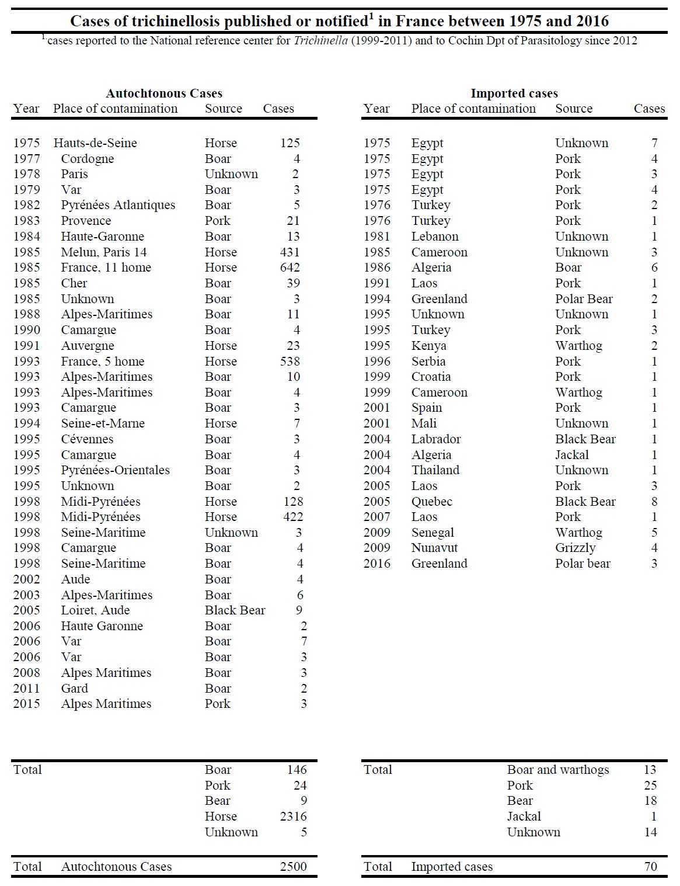

Depuis 2016, 2 cas liés à de la consommation de viande de sanglier ont été rapportés dans les Pyrénées Orientales (Vallespir) en 2021 et 9 cas en 2017 après consommation de viande de porc en Serbie.
